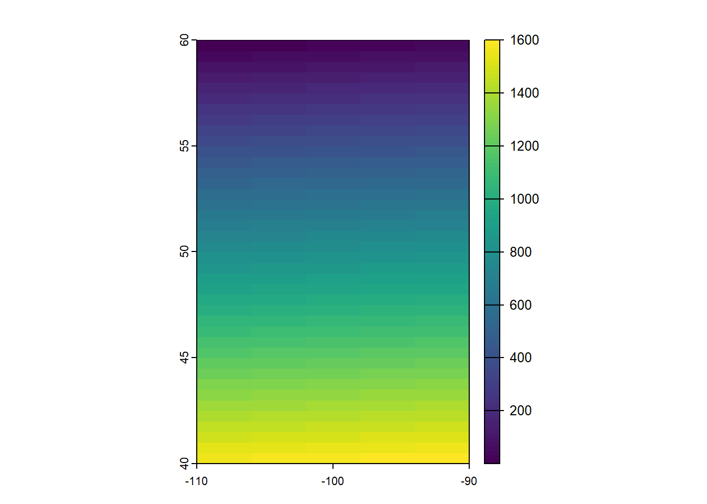
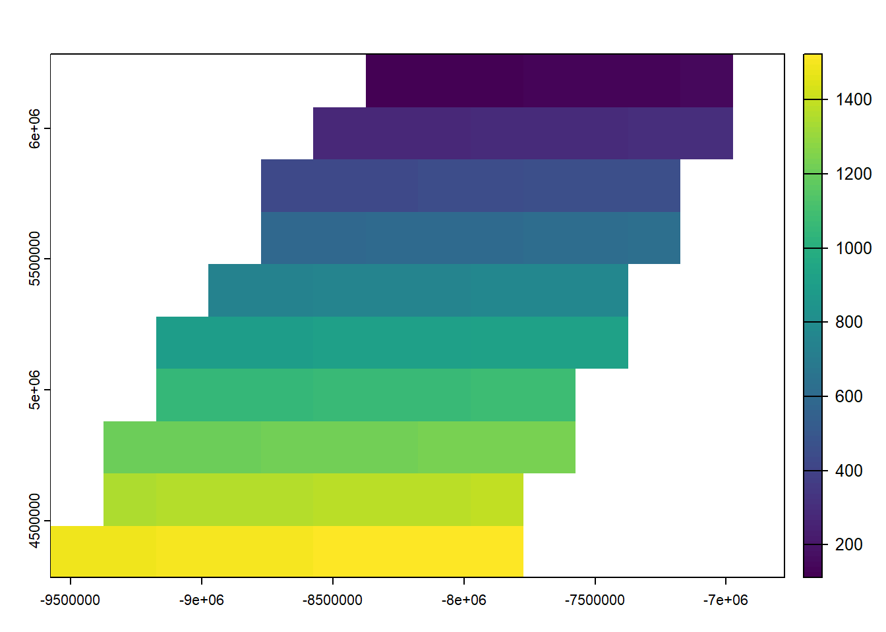
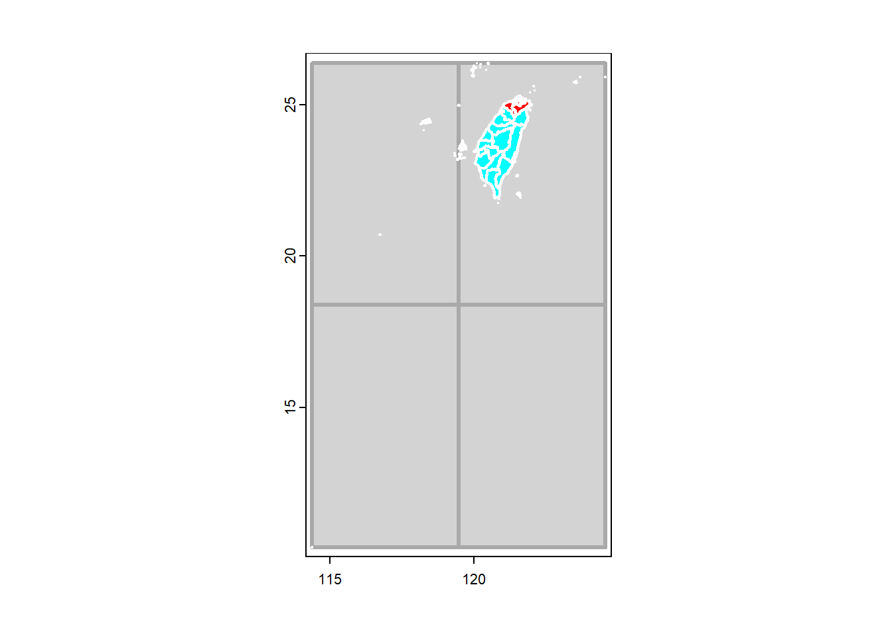

Spatial
This is an introduction to spatial data manipulation with R and the terra package. In this context “spatial data” refers to data about geographical locations, that is, places on earth. So to be more precise, we should speak about geospatial data, but we use the shorthand spatial.
The package terra is now the package of reference for
manipulating spatial data, spatial analysis and modeling in R. It is a
very large topics and here we cover the basics of data manipulation.
Because of the many changes happening in the past few years related to spatial data analysis in R, this section of the course is still under developement. The information below are largely extracted form online tutorial available here
Spatial data
Spatial phenomena can generally be thought of as either discrete objects with clear boundaries or as a continuous phenomena that can be observed everywhere, but that do not have natural boundaries. Discrete spatial objects may refer to a river, road, country, town, or a research site. Examples of continuous phenomena, or spatial fields, include elevation, temperature, and air quality.
Spatial objects are usually represented by vector data. Such data consists of a description of the geometry or shape of the objects, and normally also includes additional variables. For example, a vector data set may represent the borders of the countries of the world (geometry), and also store their names and the size of their population in 2015; or it may have the geometry of the roads in an area, as well as their type and names. These additional variables are often referred to as attributes. Continuous spatial data (fields) are usually represented with a raster data structure. We discuss these two data types in turn.
Vector data
The main vector data types are points, lines and polygons. In all cases, the geometry of these data structures consists of sets of coordinate pairs (x, y). Points are the simplest case. Each point has one coordinate pair, and n associated variables. For example, a point might represent a place where a rat was trapped, and the attributes could include the date it was captured, the person who captured it, the species size and sex, and information about the habitat. It is also possible to combine several points into a multi-point structure, with a single attribute record. For example, all the coffee shops in a town could be considered as a single geometry.
The geometry of lines is a just a little bit more complex. First note that in this context, the term line refers to a set of one or more polylines (connected series of line segments). For example, in spatial analysis, a river and all its tributaries could be considered as a single line (but they could also also be several lines, perhaps one for each tributary river). Lines are represented as ordered sets of coordinates (nodes). The actual line segments can be computed (and drawn on a map) by connecting the points. Thus, the representation of a line is very similar to that of a multi-point structure. The main difference is that for a line the ordering of the points is important, because we need to know in which order the points should be connected.
A network (e.g. a road or river network), or spatial graph, is a special type of lines geometry where there is additional information about things like flow, connectivity, direction, and distance.
A polygon refers to a set of closed polylines. The geometry is very similar to that of lines, but to close a polygon the last coordinate pair coincides with the first pair. A complication with polygons is that they can have holes (that is a polygon entirely enclosed by another polygon, that serves to remove parts of the enclosing polygon (for example to show an island inside a lake. Also, valid polygons do not self-intersect (but it is OK for a line to self-cross). Again, multiple polygons can be considered as a single geometry. For example, Indonesia consists of many islands. Each island can be represented by a single polygon, but together then can be represent a single (multi-) polygon representing the entire country.
Raster data
Raster data is commonly used to represent spatially continuous phenomena such as elevation. A raster divides the world into a grid of equally sized rectangles (referred to as cells or, in the context of satellite remote sensing, pixels) that all have one or more values (or missing values) for the variables of interest. A raster cell value should normally represent the average (or majority) value for the area it covers. However, in some cases the values are actually estimates for the center of the cell (in essence becoming a regular set of points with an attribute).
In contrast to vector data, in raster data the geometry is not explicitly stored as coordinates. It is implicitly set by knowing the spatial extent and the number or rows and columns in which the area is divided. From the extent and number of rows and columns, the size of the raster cells (spatial resolution) can be computed. While raster cells can be thought of as a set of regular polygons, it would be very inefficient to represent the data that way as coordinates for each cell would have to be stored explicitly. Doing so would also dramatically increase processing time.
Continuous surface data are sometimes stored as triangulated irregular networks (TINs); these are not discussed here.
Simple representation of spatial data
The basic data types in R are numbers, characters, logical (TRUE or FALSE) and factor values. Values of a single type can be combined in vectors and matrices, and variables of multiple types can be combined into a data.frame. We can represent (only very) basic spatial data with these data types. Let’s say we have the location (represented by longitude and latitude) of ten weather stations (named A to J) and their annual precipitation.
In the example below we make a very simple map. Note that a map is special type of plot (like a scatter plot, barplot, etc.). A map is a plot of geospatial data that also has labels and other graphical objects such as a scale bar or legend. The spatial data itself should not be referred to as a map.
name <- LETTERS[1:10]
longitude <- c(-116.7, -120.4, -116.7, -113.5, -115.5,
-120.8, -119.5, -113.7, -113.7, -110.7)
latitude <- c(45.3, 42.6, 38.9, 42.1, 35.7, 38.9,
36.2, 39, 41.6, 36.9)
stations <- cbind(longitude, latitude)
# Simulated rainfall data
set.seed(0)
precip <- round((runif(length(latitude))*10)^3)A map of point locations is not that different from a basic x-y scatter plot. Below is a plot (a map in this case) that shows the location of the weather stations, and the size of the dots is proportional to the amount of precipitation. The point size is set with argument cex.
psize <- 1 + precip/500
plot(stations, cex=psize, pch=20, col='red', main='Precipitation')
# add names to plot
text(stations, name, pos=4)
# add a legend
breaks <- c(100, 250, 500, 1000)
legend.psize <- 1+breaks/500
legend("topright", legend=breaks, pch=20, pt.cex=legend.psize, col='red', bg='gray')
Note that the data are represented by “longitude, latitude”, in that order, do not use “latitude, longitude” because on most maps latitude (North/South) is used for the vertical axis and longitude (East/West) for the horizontal axis. This is important to keep in mind, as it is a very common source of mistakes!
We can add multiple sets of points to the plot, and even draw lines and polygons:
lon <- c(-116.8, -114.2, -112.9, -111.9, -114.2, -115.4, -117.7)
lat <- c(41.3, 42.9, 42.4, 39.8, 37.6, 38.3, 37.6)
x <- cbind(lon, lat)
plot(stations, main='Precipitation')
polygon(x, col='blue', border='light blue')
lines(stations, lwd=3, col='red')
points(x, cex=2, pch=20)
points(stations, cex=psize, pch=20, col='red', main='Precipitation')
The above illustrates how numeric vectors representing locations can
be used to draw simple maps. It also shows how points can (and typically
are) represented by pairs of numbers. A line and a polygon can be
represented by a number of these points. Polygons need to “closed”, that
is, the first point must coincide with the last point, but the
polygon function took care of that for us.
There are cases where a simple approach like this may suffice and you
may come across this in older R code or packages. Likewise, raster data
could be represented by a matrix or higher-order array. Particularly
when only dealing with point data such an approach may be practical. For
example, a spatial data set representing points and attributes could be
made by combining geometry and attributes in a single
data.frame.
## longitude latitude name precip
## 1 -116.7 45.3 A 721
## 2 -120.4 42.6 B 19
## 3 -116.7 38.9 C 52
## 4 -113.5 42.1 D 188
## 5 -115.5 35.7 E 749
## 6 -120.8 38.9 F 8
## 7 -119.5 36.2 G 725
## 8 -113.7 39.0 H 843
## 9 -113.7 41.6 I 289
## 10 -110.7 36.9 J 249However, wst is a data.frame and R does not
automatically understand the special meaning of the first two columns,
or to what coordinate reference system it refers (longitude/latitude, or
perhaps UTM zone 17S, or ….?).
Moreover, it is non-trivial to do some basic spatial operations. For example, the blue polygon drawn on the map above might represent a state, and a next question might be which of the 10 stations fall within that polygon. And how about any other operation on spatial data, including reading from and writing data to files? To facilitate such operation a number of R packages have been developed that define new spatial data types that can be used for this type of specialized operations.
Recent packages in R that define such spatial data structures include
terra and sf. These packages replace a set of
older packages including raster and sp.
We mostly use the terra package in these materials. You
can install the latest released version of terra from CRAN with
install.packages("terra").
Reading and writing spatial data
Reading and writing spatial data is complicated by the fact that there are many different file formats. However, there are a few formats that are most common that we discuss here.
Vector files
The shapefile is the most commonly used file format for vector data (if you are not familiar with this file format, an important thing to understand is that a shapefile is really a set of at least three (ideally four) files, with all the same name, but different extension. For shapefile x you must have, in the same directory, these three files: x.shp, x.shx, x.dbf, and ideally also x.prj.
It is easy to read and write such files. Here we use a shapefile that
comes with the terra package.
Reading
Let’s first download some spatial data of Taiwan using the
geodata package:
library (geodata)
#TWN <- gadm(country="TWN", level=1, path=tempdir())
#TWN <- gadm(country="TWN", level=1, path="./data"
TWN <- vect('data/gadm/gadm41_TWN_1_pk.rds')
TWN
# check for ?gadmUsing a .shp file, we can use the vect function from the
terra package to read the file. First:
# example using .shp file
library(terra)
filename1 <- system.file("ex/lux.shp", package="terra")
basename(filename1)## [1] "lux.shp"We use the system.file function to get the full path name of the file’s location. We need to do this as the location of this file depends on where the terra package is installed. You should not use the system.file function for your own files. It only serves for creating examples with data that ship with R. With your own files, just use the filename (and path if the file is not in your working directory).
Then:
## class : SpatVector
## geometry : polygons
## dimensions : 12, 6 (geometries, attributes)
## extent : 5.74414, 6.528252, 49.44781, 50.18162 (xmin, xmax, ymin, ymax)
## source : lux.shp
## coord. ref. : lon/lat WGS 84 (EPSG:4326)
## names : ID_1 NAME_1 ID_2 NAME_2 AREA POP
## type : <num> <chr> <num> <chr> <num> <int>
## values : 1 Diekirch 1 Clervaux 312 18081
## 1 Diekirch 2 Diekirch 218 32543
## 1 Diekirch 3 Redange 259 18664The vect function returns SpatVector
objects. It is important to recognise the difference between this type
of R object (SpatVector), and the file (“shapefile”) that
was used to create it. Thus, you should never say “I have a shapefile in
R”, say “I have a SpatVector of polygons in R”, (and in some cases you
can add “created from a shapefile”). The shapefile is one of many file
formats for vector data.
Raster files
The terra package can read and write several raster file formats.
Reading raster data
Get raster data of taiwan elevation using the geodata
package:
## class : SpatRaster
## dimensions : 636, 684, 1 (nrow, ncol, nlyr)
## resolution : 0.008333333, 0.008333333 (x, y)
## extent : 116.6, 122.3, 20.5, 25.8 (xmin, xmax, ymin, ymax)
## coord. ref. : lon/lat WGS 84 (EPSG:4326)
## source : TWN_elv_msk.tif
## name : TWN_elv_msk
## min value : -12
## max value : 3741Using a .tif file, we can use the rast function from the
terra package to read the file. Firstusing example file
from the package:
## [1] "logo.tif"Now we can do
## class : SpatRaster
## dimensions : 77, 101, 3 (nrow, ncol, nlyr)
## resolution : 1, 1 (x, y)
## extent : 0, 101, 0, 77 (xmin, xmax, ymin, ymax)
## coord. ref. : Cartesian (Meter)
## source : logo.tif
## colors RGB : 1, 2, 3
## names : red, green, blue
## min values : 0, 0, 0
## max values : 255, 255, 255Note that x is a SpatRaster of three layers (“bands”). We can subset it to get a single layer.
## class : SpatRaster
## dimensions : 77, 101, 1 (nrow, ncol, nlyr)
## resolution : 1, 1 (x, y)
## extent : 0, 101, 0, 77 (xmin, xmax, ymin, ymax)
## coord. ref. : Cartesian (Meter)
## source : logo.tif
## name : green
## min value : 0
## max value : 255The same approach holds for other raster file formats, including GeoTiff, NetCDF, Imagine, and ESRI Grid formats.
Writing raster data
Use writeRaster to write raster data. You must provide a
SpatRaster and a filename. The file format will be guessed from the
filename extension. If that does not work you can provide an argument
like format=GTiff. Note the argument
overwrite=TRUE and see ?writeRaster for more
arguments, such as datatype= to set the a specific datatype
(e.g., integer).
## class : SpatRaster
## dimensions : 636, 684, 1 (nrow, ncol, nlyr)
## resolution : 0.008333333, 0.008333333 (x, y)
## extent : 116.6, 122.3, 20.5, 25.8 (xmin, xmax, ymin, ymax)
## coord. ref. : lon/lat WGS 84 (EPSG:4326)
## source : ele.tif
## name : TWN_elv_msk
## min value : -12
## max value : 3741Coordinate Reference Systems
A very important aspect of spatial data is the coordinate reference system (CRS) that is used. For example, a location of (140, 12) is not meaningful if you do know where the origin (0,0) is and if the x-coordinate is 140 meters, feet, nautical miles, kilometers, or perhaps degrees away from the x-origin.
Coordinate Reference Systems (CRS)
Angular coordinates
The earth has an irregular spheroid-like shape. The natural coordinate reference system for geographic data is longitude/latitude. This is an angular coordinate reference system. The latitude (phi) of a point is the angle between the equatorial plane and the line that passes through a point and the center of the Earth. Longitude (lambda) is the angle from a reference meridian (lines of constant longitude) to a meridian that passes through the point.
Obviously we cannot actually measure these angles. But we can estimate them. To do so, you need a model of the shape of the earth. Such a model is called a “datum”. The simplest datums are a spheroid (a sphere that is “flattened” at the poles and bulges at the equator). More complex datums allow for more variation in the earth’s shape. The most commonly used datum is called WGS84 (World Geodesic System 1984). This is very similar to NAD83 (The North American Datum of 1983). Other, local datums exist to more precisely record locations for a single country or region.
So the basic way to record a location is a coordinate pair in degrees and a reference datum. Sometimes people say that their coordinates are “in WGS84”. That does not tell us much; they typically mean to say that they are longitude/latitude relative to the WGS84 datum. Likewise longitude/latitude coordinates are sometimes referred to as “geographic” coordinates. That is rather odd, if planar coordinate reference systems (see below) are not geographic, what are they?
Projections
A major question in spatial analysis and cartography is how to transform this three dimensional angular system to a two dimensional planar (sometimes called “Cartesian”) system. A planar system is easier to use for certain calculations and required to make maps (unless you have a 3-d printer). The different types of planar coordinate reference systems are referred to as “projections”. Examples are “Mercator”, “UTM”, “Robinson”, “Lambert”, “Sinusoidal” and “Albers”.
There is not one best projection. Some projections can be used for a map of the whole world; other projections are appropriate for small areas only. One of the most important characteristics of a map projection is whether it is “equal area” (the scale of the map is constant) or “conformal” (the shapes of the geographic features are as they are seen on a globe). No two dimensional map projection can be both conformal and equal-area (but they can be approximately both for smaller areas, e.g. UTM, or Lambert Equal Area for a larger area), and some are neither.
Notation
A planar CRS is defined by a projection, datum, and a set of parameters. The parameters determine things like where the center of the map is. The number of parameters depends on the projection. It is therefore not trivial to document a projection used, and several systems exist. In R we used to depend on the PROJ.4 notation. PROJ.4 is the name of a software library that is commonly used for CRS transformation. You can find many more of these on spatialreference.org
The PROJ.4 notation is no longer fully supported in the newer versions of the library (that was renamed to PR\(\phi\)J). It still works for CRSs with the WGS84 datum. For other cases you have to use a EPSG code (if available) or a Well-Known-Text notation.
Most commonly used CRSs have been assigned a “EPSG code” (EPSG stands
for European Petroleum Survey Group). This is a unique ID that can be a
simple way to identify a CRS. For example EPSG:27561 is
equivalent to
+proj=lcc +lat_1=49.5 +lat_0=49.5 +lon_0=0 +k_0=0.999877341 +x_0=6 +y_0=2 +a=6378249.2 +b=6356515 +towgs84=-168,-60,320,0,0,0,0 +pm=paris +units=m +no_defs.
Now let’s look at an example with a spatial data set in R.
## class : SpatVector
## geometry : polygons
## dimensions : 12, 6 (geometries, attributes)
## extent : 5.74414, 6.528252, 49.44781, 50.18162 (xmin, xmax, ymin, ymax)
## source : lux.shp
## coord. ref. : lon/lat WGS 84 (EPSG:4326)
## names : ID_1 NAME_1 ID_2 NAME_2 AREA POP
## type : <num> <chr> <num> <chr> <num> <int>
## values : 1 Diekirch 1 Clervaux 312 18081
## 1 Diekirch 2 Diekirch 218 32543
## 1 Diekirch 3 Redange 259 18664We can inspect the coordinate reference system like this.
## [1] "GEOGCRS[\"WGS 84\",\n DATUM[\"World Geodetic System 1984\",\n ELLIPSOID[\"WGS 84\",6378137,298.257223563,\n LENGTHUNIT[\"metre\",1]]],\n PRIMEM[\"Greenwich\",0,\n ANGLEUNIT[\"degree\",0.0174532925199433]],\n CS[ellipsoidal,2],\n AXIS[\"geodetic latitude (Lat)\",north,\n ORDER[1],\n ANGLEUNIT[\"degree\",0.0174532925199433]],\n AXIS[\"geodetic longitude (Lon)\",east,\n ORDER[2],\n ANGLEUNIT[\"degree\",0.0174532925199433]],\n ID[\"EPSG\",4326]]"Assigning CRS
Sometimes we have data without a CRS. This can be because the file
used was incomplete, or perhaps because we created the data ourselves
with R code. In that case we can assign the CRS if we know what it
should be. Here I first remove the CRS of pp and then I set
it again.
## [1] ""## [1] "GEOGCRS[\"unknown\",\n DATUM[\"World Geodetic System 1984\",\n ELLIPSOID[\"WGS 84\",6378137,298.257223563,\n LENGTHUNIT[\"metre\",1]],\n ID[\"EPSG\",6326]],\n PRIMEM[\"Greenwich\",0,\n ANGLEUNIT[\"degree\",0.0174532925199433],\n ID[\"EPSG\",8901]],\n CS[ellipsoidal,2],\n AXIS[\"longitude\",east,\n ORDER[1],\n ANGLEUNIT[\"degree\",0.0174532925199433,\n ID[\"EPSG\",9122]]],\n AXIS[\"latitude\",north,\n ORDER[2],\n ANGLEUNIT[\"degree\",0.0174532925199433,\n ID[\"EPSG\",9122]]]]"Note that you should not use this approach to change the CRS of a data set from what it is to what you want it to be. Assigning a CRS is like labeling something. You need to provide the label that corresponds to the item. Not to what you would like it to be. For example if you label a bicycle, you can write “bicycle”. Perhaps you would prefer a car, and you can label your bicycle as “car” but that would not do you any good. It is still a bicycle. You can try to transform your bicycle into a car. That would not be easy. Transforming spatial data is easier.
Transforming vector data
We can transform these data to a new data set with another CRS using
the project method.
Here we use the Robinson projection. First we need to find the correct notation.
Now use it:
## class : SpatVector
## geometry : polygons
## dimensions : 12, 6 (geometries, attributes)
## extent : 471320.7, 536010.5, 5269709, 5345677 (xmin, xmax, ymin, ymax)
## coord. ref. : +proj=robin +lon_0=0 +x_0=0 +y_0=0 +datum=WGS84 +units=m +no_defs
## names : ID_1 NAME_1 ID_2 NAME_2 AREA POP
## type : <num> <chr> <num> <chr> <num> <int>
## values : 1 Diekirch 1 Clervaux 312 18081
## 1 Diekirch 2 Diekirch 218 32543
## 1 Diekirch 3 Redange 259 18664After the transformation, the units of the geometry are no longer in degrees, but in meters away from (longitude=0, latitude=0). The spatial extent of the data is also in these units.
We can backtransform to longitude/latitude:
Transforming raster data
Vector data can be transformed from lon/lat coordinates to planar and back without loss of precision. This is not the case with raster data. A raster consists of rectangular cells of the same size (in terms of the units of the CRS; their actual size may vary). It is not possible to transform cell by cell. For each new cell, values need to be estimated based on the values in the overlapping old cells. If the values are categorical data, the “nearest neighbor” method is commonly used. Otherwise some sort of interpolation is employed (e.g. “bilinear”).
Because projection of rasters affects the cell values, in most cases you will want to avoid projecting raster data and rather project vector data. But here is how you can project raster data.
## class : SpatRaster
## dimensions : 40, 40, 1 (nrow, ncol, nlyr)
## resolution : 0.5, 0.5 (x, y)
## extent : -110, -90, 40, 60 (xmin, xmax, ymin, ymax)
## coord. ref. : lon/lat WGS 84 (CRS84) (OGC:CRS84)
## source(s) : memory
## name : lyr.1
## min value : 1
## max value : 1600
The simplest approach is to provide a new crs (the Robinson crs in this case):
## [1] "+proj=robin +datum=WGS84"## [1] "PROJCRS[\"unknown\",\n BASEGEOGCRS[\"unknown\",\n DATUM[\"World Geodetic System 1984\",\n ELLIPSOID[\"WGS 84\",6378137,298.257223563,\n LENGTHUNIT[\"metre\",1]],\n ID[\"EPSG\",6326]],\n PRIMEM[\"Greenwich\",0,\n ANGLEUNIT[\"degree\",0.0174532925199433],\n ID[\"EPSG\",8901]]],\n CONVERSION[\"unknown\",\n METHOD[\"Robinson\"],\n PARAMETER[\"Longitude of natural origin\",0,\n ANGLEUNIT[\"degree\",0.0174532925199433],\n ID[\"EPSG\",8802]],\n PARAMETER[\"False easting\",0,\n LENGTHUNIT[\"metre\",1],\n ID[\"EPSG\",8806]],\n PARAMETER[\"False northing\",0,\n LENGTHUNIT[\"metre\",1],\n ID[\"EPSG\",8807]]],\n CS[Cartesian,2],\n AXIS[\"(E)\",east,\n ORDER[1],\n LENGTHUNIT[\"metre\",1,\n ID[\"EPSG\",9001]]],\n AXIS[\"(N)\",north,\n ORDER[2],\n LENGTHUNIT[\"metre\",1,\n ID[\"EPSG\",9001]]]]"
But that is not a good method. As you should want to assure that you project fits to exactly the raster parameters you need (so that it lines up with other raster data you are using).
To have this kind of control, provide an existing SpatRaster with the geometry you desire. That is generally the best way to project raster. By providing an existing SpatRaster, such that your newly projected data perfectly aligns with it. In this example we do not have an existing SpatRaster object, so we create from the result obtained above.
Now project, and note the change in the coordinates.
## class : SpatRaster
## dimensions : 10, 14, 1 (nrow, ncol, nlyr)
## resolution : 2e+05, 2e+05 (x, y)
## extent : -9577685, -6777685, 4283463, 6283463 (xmin, xmax, ymin, ymax)
## coord. ref. : +proj=robin +lon_0=0 +x_0=0 +y_0=0 +datum=WGS84 +units=m +no_defs
## source(s) : memory
## name : lyr.1
## min value : 111.1541
## max value : 1523.5796
For raster based analysis it is often important to use equal area projections, particularly when large areas are analyzed. This will assure that the grid cells are all of same size, and therefore comparable to each other, especially when count data are used.
Vector data manipulation
This chapter illustrates some ways in which we can manipulate vector data. We start with an example SpatVector that we read from a shapefile.

We can plot these data in many ways. For example:
We can see this data set is incomplete for Taiwan. Let’s get some data directly from Taiwan
url <- 'https://data.moi.gov.tw/MoiOD/System/DownloadFile.aspx?DATA=72874C55-884D-4CEA-B7D6-F60B0BE85AB0'
path1 <- tempfile(fileext = ".zip")
if (file.exists(path1)) 'file alredy exists' else download.file(url, path1, mode="wb")
zip::unzip(zipfile = path1,exdir = 'data')Make SpatialVector:
Make the new plot:

Basics
Geometry and attributes
To extract the attributes (data.frame) from a SpatVector, use:
You can also extract the geometry as a a matrix (this is rarely needed).
## geom part x y hole
## [1,] 1 1 119.9645 25.94552 0
## [2,] 1 1 119.9643 25.94549 0
## [3,] 1 1 119.9642 25.94549 0
## [4,] 1 1 119.9642 25.94549 0
## [5,] 1 1 119.9642 25.94550 0
## [6,] 1 1 119.9641 25.94552 0Or as “well-known-text”.
## [1] "MULTIPOLYGON (((119.96446 25.945521, 119.964275 25"
## [2] "MULTIPOLYGON (((121.959718 24.844932, 121.960654 2"
## [3] "POLYGON ((120.45656 24.207183, 120.485893 24.19737"
## [4] "POLYGON ((121.27087 24.23661, 121.271083 24.23656,"
## [5] "MULTIPOLYGON (((120.081084 23.52412, 120.081612 23"
## [6] "MULTIPOLYGON (((120.826485 21.756146, 120.826462 2"
## [7] "MULTIPOLYGON (((121.710159 25.176039, 121.710159 2"
## [8] "POLYGON ((121.570989 25.197165, 121.57098 25.19703"
## [9] "POLYGON ((121.537526 25.300029, 121.537689 25.3000"
## [10] "POLYGON ((121.328349 24.433038, 121.328456 24.4323"
## [11] "POLYGON ((120.440252 23.413081, 120.440401 23.4130"
## [12] "POLYGON ((121.263822 25.121974, 121.266684 25.1207"
## [13] "POLYGON ((120.911982 24.732445, 120.91207 24.73231"
## [14] "POLYGON ((120.447587 23.518186, 120.447675 23.5181"
## [15] "MULTIPOLYGON (((120.151922 23.392736, 120.152511 2"
## [16] "MULTIPOLYGON (((118.233816 24.162771, 118.234055 2"
## [17] "MULTIPOLYGON (((114.361729 10.372803, 114.361744 1"
## [18] "MULTIPOLYGON (((121.611792 21.9429, 121.611329 21."
## [19] "POLYGON ((121.631756 24.369428, 121.631667 24.3692"
## [20] "MULTIPOLYGON (((119.440261 23.221366, 119.44041 23"
## [21] "POLYGON ((120.930115 24.853014, 120.930242 24.8529"
## [22] "POLYGON ((121.040116 24.943927, 121.040183 24.9438"Variables
You can extract a variable as you would do with a
data.frame.
## [1] "Lienchiang County" "Yilan County" "Changhua County"
## [4] "Nantou County" "Yunlin County" "Pingtung County"
## [7] "Keelung City" "Taipei City" "New Taipei City"
## [10] "Taichung City" "Tainan City" "Taoyuan City"
## [13] "Miaoli County" "Chiayi City" "Chiayi County"
## [16] "Kinmen County" "Kaohsiung City" "Taitung County"
## [19] "Hualien County" "Penghu County" "Hsinchu City"
## [22] "Hsinchu County"To sub-set a SpatVector to one or more variables you can use the notation below. Note how this is different from the above example. Above a vector of values is returned. With the approach below you get a new SpatVector with only one variable.
## class : SpatVector
## geometry : polygons
## dimensions : 22, 1 (geometries, attributes)
## extent : 114.3593, 124.5612, 10.37135, 26.38528 (xmin, xmax, ymin, ymax)
## source : COUNTY_MOI_1130718.shp
## coord. ref. : lon/lat GCS_TWD97[2020]
## names : COUNTYENG
## type : <chr>
## values : Lienchiang County
## Yilan County
## Changhua CountyYou can add a new variable to a SpatVector just as if it were a data.frame.
Note that to get the number of geometries of SpatVector
Taiwan, you can use nrow(Taiwan), or
size(Taiwan). You can also do perim(Taiwan) to
get the “length” of the spatial objects (zero for points, the length of
the lines, or the perimeter of the polygons).
Assigning a new value to an existing variable.
To get rid of a variable, set it to NULL.
Merge
You can assign an attributes table (data.frame) to a SpatVector with
values<-. To add attributes to a SpatVector that already
has attributes use merge (or cbind if you know
the order of the records is the same).
dfr <- data.frame(County=Taiwan$COUNTYENG, Value=round(runif(length(Taiwan), 100, 1000)))
dfr <- dfr[order(dfr$County), ]
pm <- merge(Taiwan, dfr, by.x="COUNTYENG",by.y="County")
# pm
# head(pm)Note the new variable Value added to pm
Records
Selecting rows (records).
It is also possible to interactively select and query records by
clicking on a plotted dataset. That is difficult to show here. See
?sel for interactively selecting geometries and
?click to identify attributes by clicking on a plot
(map).
Append and aggregate
Append
More example data. Object z consists of four polygons; z2 is one of these four polygons.
## class : SpatVector
## geometry : polygons
## dimensions : 4, 1 (geometries, attributes)
## extent : 114.3593, 124.5612, 10.37135, 26.38528 (xmin, xmax, ymin, ymax)
## coord. ref. : lon/lat GCS_TWD97[2020]
## names : Zone
## type : <int>
## values : 1
## 2
## 3z1 <- z[1,]
z2 <- z[2,]
z3 <- z[3,]
z4 <- z[4,]
plot(Taiwan)
plot(z, add=TRUE, border='blue', lwd=5)
plot(z2, add=TRUE, border='red', lwd=2, col='red')
To append SpatVector objects of the same (vector) type you can use
rbind:
Note how rbind allows you to append SpatVect objects
with different attribute names, unlike the standard rbind
for data.frame.
Aggregate
It is common to aggregate (“dissolve”) polygons that have the same value for an attribute of interest. In this case, we want to highlight the North of Taiwan.
Taiwan$region<-c(rep("Others",6), rep("North",3), rep("Others",2), "North", rep("Others",10))
pa <- aggregate(Taiwan, by='region')
za <- aggregate(z)
plot(za, col='light gray', border='light gray', lwd=5)
plot(pa, add=TRUE, col=rainbow(3), lwd=3, border='white')
It is also possible to aggregate polygons without dissolving the borders.
Taiwan$region<-c(rep("Others",6), rep("North",3), rep("Others",2), "North", rep("Others",10))
pa <- aggregate(Taiwan, by='region',dissolve=FALSE)
za <- aggregate(z, dissolve = FALSE)
plot(za, col='light gray', border='dark gray', lwd=3)
plot(pa, add=TRUE, col=rainbow(3), lwd=2, border='white')
This is a structure that is similar to what you may get for an
archipelago: multiple polygons represented as one entity (one row). Use
disagg to split these up into their parts.
## class : SpatVector
## geometry : polygons
## dimensions : 695, 6 (geometries, attributes)
## extent : 114.3593, 124.5612, 10.37135, 26.38528 (xmin, xmax, ymin, ymax)
## coord. ref. : lon/lat GCS_TWD97[2020]
## names : region COUNTYID COUNTYCODE COUNTYNAME COUNTYENG agg_n
## type : <chr> <logical> <logical> <logical> <logical> <int>
## values : North <NA> <NA> <NA> <NA> 4
## North <NA> <NA> <NA> <NA> 4
## North <NA> <NA> <NA> <NA> 4Overlay
There are many different ways to “overlay” vector data. Here are some examples:
- Erase
Erase a part of a SpatVector

- Intersect
Easier to complete with intersect SpatVectors
You got Taiping Island.
You can also intersect or crop with a
SpatExtent (rectangle). The difference between intersect
and crop is that with crop the geometry of the second
argument is not added to the output.
e <- ext(119, 123, 21, 26)
te <- crop(Taiwan, e)
plot(Taiwan)
plot(e, add=TRUE, lwd=3, col="red")
plot(te, col='light blue', add=TRUE)
plot(e, add=TRUE, lwd=3, border="blue")
- Union
Get the union of two SpatVectors.
## class : SpatVector
## geometry : polygons
## dimensions : 30, 6 (geometries, attributes)
## extent : 114.3593, 124.5612, 10.37135, 26.38528 (xmin, xmax, ymin, ymax)
## coord. ref. : lon/lat GCS_TWD97[2020]
## names : Zone COUNTYID COUNTYCODE COUNTYNAME COUNTYENG region
## type : <int> <chr> <chr> <chr> <chr> <chr>
## values : 1 NA NA NA NA NA
## 2 NA NA NA NA NA
## 3 NA NA NA NA NANote that there are many more polygons now. One for each unique combination of polygons (and attributes in this case).

- Cover
cover is a combination of intersect and
union. intersect returns new (intersected)
geometries with the attributes of both input datasets.
union appends the geometries and attributes of the input.
cover returns the intersection and appends the other
geometries and attributes of both datasets.

- Difference
The symmetrical difference of two SpatVectors

Spatial queries
We can query polygons with points (“point-in-polygon query”).
pts <- matrix(c(117, 122, 117, 122, 15, 15, 23, 23), ncol=2)
spts <- vect(pts, crs=crs(Taiwan))
plot(z, col='light blue', lwd=2)
points(spts, col='light gray', pch=20, cex=6)
text(spts, 1:nrow(pts), col='red', font=2, cex=1.5)
lines(Taiwan, col='blue', lwd=2)extract is used for queries between SpatVector and
SpatRaster objects, and also for queries between SpatVectors.
## id.y id.x
## [1,] 1 NaN
## [2,] 2 NaN
## [3,] 3 NaN
## [4,] 4 NaN
## [5,] 5 NaN
## [6,] 6 NaN
## [7,] 7 NaN
## [8,] 8 NaN
## [9,] 9 NaN
## [10,] 10 NaN
## [11,] 11 NaN
## [12,] 12 NaN
## [13,] 13 NaN
## [14,] 14 NaN
## [15,] 15 NaN
## [16,] 16 NaN
## [17,] 17 NaN
## [18,] 18 NaN
## [19,] 19 NaN
## [20,] 20 NaN
## [21,] 21 NaN
## [22,] 22 NaN